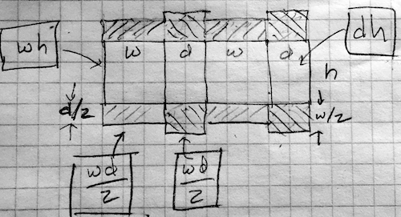

Objectives
- Given an algebraically simple constraint in the problem formulation, be able to use that constraint to reduce the dimension of an optimization problem. (Later we’ll use constraints in a different way when finding argmaxes and argmins.)
- Relate the argmax or argmax to the gradient of the objective function.
- Recognize a range around the argmax or argmin as giving acceptable outcomes.
The best?
Decision making is about choosing among alternatives. In some engineering or policy contexts, this can mean finding the setting for an input variable that will produce the “best” outcome. For those who have studied calculus, it’s natural to believe that calculus-based techniques for optimization are the route to solving the problem.
This is a calculus course, so you may be surprised to find out that the next few classes are about developing justified skepticism about the use of calculus-based techniques. Or, to be more precise, we want to emphasize that the optimization techniques covered in the first semester are only part of a broader set of techniques for real-world decision-making problems.
In this session, we’re going to:
- Review the calculus-based techniques and reduce them to an algorithm that can be implemented as an operator like differentiation or integration.
- Discuss the properties of a mathematical optimum to help you understand the illusion of “best” and how to quantify what is “good enough.”
In a later Daily Digital, we’ll introduce the concept of incommensurate outcomes and show you that the concept of a “single best solution” is often logically incoherent.
Such talk goes against the grain of many decision makers. They argue with some reason that “only best is good enough,” or that looking for “good enough” solutions is a sign of laziness. There are some situations where it is indeed worthwhile to seek to reach an absolute maximum. It takes judgment and experience to recognize when you are in a situation and when you are not—which is more often the case.
Functions, derivatives and maxima
Recall the setting for calculus-type maximization. You have a function with one or more inputs, say, \(f(x)\) or \(g(x,y)\) or, often, \(h(x, y, z, \ldots)\) where \(\ldots\) might be standing for tens or hundreds or thousands of variables or more.
If you can graph the function (feasible for one- or two-input functions), you can often easily scan the graph by eye to find the peak. The calculus-based techniques were developed for situations where such graphing is not possible and, instead, you have a formula for the function. (Such occasions are of great theoretical interest but not all that common in practice.) The basis of the calculus techniques is the observation that, at the argmax of a smooth function, the derivative of the function is 0. (This applies equally well to functions of multiple variables, where we say that the “gradient is zero” which means that each and every component of the gradient vector is zero.)
As an example, consider a problem that often appears in calculus textbooks. (Example You have been tasked to design a container for a volume V of liquid. It is desired to make the weight of the container as little as possible. (This is a minimization problem, then.) In classical textbook fashion, you are told that the container is to be a cylinder made out of a particular metal of a particular thickness.
This is a lovely geometry/calculus problem. Whether it is relevant to any genuine, real-world problem is another question.
Using the notation in the diagram, the volume and surface area of the cylinder is \[V(r, h) \equiv \pi r^2 h \ \ \ \mbox{and}\ \ \ A(r, h) \equiv 2 \pi r^2 + 2 \pi r h\]
Minimizing the weight of the cylinder is our objective (according to the problem statement) and the weight is proportional to the surface area. Since the volume \(V\) is given (according to the problem statement), we want to re-write the area function to use volume:
\[h(r, V) \equiv V / \pi r^2 \ \ \ \implies\ \ \ A(r, V) = 2 \pi r^2 + 2 \pi r V/\pi r^2 = 2 \pi r^2 + 2 V / r\] Suppose \(V\) were specified as 1000 liters. A good first step is to choose appropriate units for \(r\) to make sure the formula for \(A(r, V)\) is dimensionally consistent. Suppose we choose \(r\) in cm. Then we want \(V\) in cubic centimeters (cc). 1000 liters is 1,000,000 cc. Now we can plot a slice of the area function:
You can easily see that the minimum is near \(r=50\)cm. Since \(h(r,V) = V/\pi r^2\), the required height of cylinder will be near \(10^6 / \pi 50^2 = 127\)cm. And, as is clear from the graph, the function’s derivative is zero at the optimal \(r\).
In calculus courses, the goal is often to find a formula for the optimal radius as a function of \(V\). So we differentiate the objective function—that is, the area function for any \(V\) and \(r\) with respect to \(r\), \[\partial_r A(r, V) = 4 \pi r - 2 V / r^2\] Setting this to zero (which will be true at the optimal \(r^\star\)) we can solve for \(r\) in terms of \(V\): \[4 \pi r^\star - 2 V/(r^ \star)^2 = 0 \ \ \ \implies\ \ \ (r^\star)^3 = \frac{1}{2\pi} V \ \ \ \implies\ \ \ r^\star = \sqrt[3]{V/2\pi}\]
For \(V = 1,000,000 cm^3\), this gives \(r^\star = 54.1926 cm\) which in turn implies that the corresponding height \(h^\star = V/\pi (r^\star)^2 = 108.3852 cm\).
We’ve presented the optimum \(r^\star\) and \(h^\star\) to the nearest micron. Does that make sense? Think about it for a moment before reading on.
Meaningless precision
A good rule of thumb in modeling is this: “If you don’t know what a sensible precision is for reporting your result, you don’t have a complete grasp of the problem.” Here are two reasonable ways to sort out a suitable precision.
- Solve a closely related problem which for many practical purposes would have been equivalent.
- Look at how big a change in the output of the objective function is produced by a change from the argmax.
Approach (2) is always at hand, since you already know the objective function. Let’s graph the objective function near \(r = 54.1926\) …
Look carefully at the axes scales. Deviating from the mathematical optimum by about 5cm (that is, 50,000 microns) produces a change in the output of the objective function by about 400 units out of 55,000. In other words, about 0.7%.
It’s true that \(r^\star = 54.1926\) cm gives the “best” outcome. And sometimes such precision is warranted. For example, improving the speed of an elite marathon racer by even 0.1% would give her a 7 second advantage: easily the difference between silver and gold!
What’s different is that you know exactly what is the ultimate objective of a marathon: finish faster. But you may not know the ultimate objective of the system your “optimal” tank will be a part of. For instance, your tank may be part of an external fuel pod on an aircraft. Certainly the designers of the aircraft want the tank to be as light as possible. But they also want to reduce drag as much as possible. A 54 cm diameter tube has about 17% more drag than a 50 cm tube. To save that much drag, it’s probably well worth increasing weight by 0.7%.
In reporting the results from an optimization problem, you ought to give the decision maker all relevant information. Here, that might be as simple as including the above graph in your report.
We mentioned another technique for getting a handle on what precision is meaningful: (1) solve a closely related problem. This often requires some insight and creativity to frame the new problem. Here, we note that large capacity tanks often are shaped like a lozenge: a cylinder with hemi-spherical ends.

Using \(h\) for the length of the cylindrical portion of the tank, and \(r\) for the radius, the volume and surface area are: \[V(r, h) = \pi r^2 h + \frac{4}{3} \pi r^3 \ \ \ \mbox{and}\ \ \ A(r,h) = 2 \pi r h + 4 \pi r^2\] Again, \(V\) was specified as 1000 liters. So we can solve the \(V\) formula for \(h(r, V)\), then plug that in for \(h\) in the area function to give \(A(r, V)\).
Find the optimum value of \(r\) to minimize \(A(r,V)\) when \(V = 1000\) liters.
Use the sandbox to plot a graph of \(A(r, V)\) for \(V = 1000\)liters.
A <- makeFun(2*(V - 4*pi*r^3/3)/r + 4*pi*r^2 ~ r, V = 1000000)
slice_plot(A(r) ~ r, domain(r=c(55,70)))Inside the box
We’d like to make a folded cardboard box in the most efficient way possible. As you know, cardboard boxes have four sides as well as eight flaps, four for the top and four for the bottom. The flaps are arranged to provide double coverage; you fold the flaps from one direction and then fold over them the flaps from the other direction.

The diagram depicts the box sides and flaps laid out on a flat piece of cardboard. The flaps are shaded with diagonal lines.
Suppose the height, width, and depth of the box are \(h\), \(w\), and \(d\) respectively. The box volume is easy:
\[V = h w d\] The area of cardboard consists of the the four sides and the eight flaps. Each component’s area is a product of the two edge lengths. For example, the box sides are either \(w h\) or \(d h\). The flaps, each of which extends half-way across the bottom or top have areas \(w d/2\).
A common size for a box is 1.3 cubic feet. We’ll use feet as the units for \(w\), \(h\), and \(d\).
As \(w\), \(h\), or \(d\) are changed, the volume and surface area of the box are changed. Asking for the \(w\), \(h\), and \(d\) that minimize the surface area of the box is not a complete statement of a problem. The minimum surface area will be zero whenever two of the three dimensions have length zero. In other words, we can minimize the surface area by making a box that is no box at all!
To complete the problem statement we need something else. Here, that something is a constraint: We demand that the box have a volume of \(V = 1.3\) cubic feet.
Often, a constraint plays the role of a dimension reduction. With \(w\), \(h\), and \(d\), we have a 3-input optimization problem. But we can use the constraint equation to solve for one of the variables as a function of the other variables and the (known) volume. For instance, we can find \(h\) as \[h = V/d w\]
The following sandbox contains the formula for the surface area \(A(w, d, V)\) of a box of volume \(V\). The graphics command draw a contour plot of \(A()\) as a function of \(w\) and \(d\), holding \(V = 1.3\) cubic feet.
A <- makeFun(2*V*(w+d)/(w*d) + 4*w*d ~ w + d, V = 1.3)
dom <- domain(w = c(0.5, 1.5), d=c(0.5, 1.5))
contour_plot(A(w, d) ~ w + d, dom,
contours_at = NULL) %>%
gf_refine(coord_fixed()) # pipe to
# gradient_plot( A(w, d) ~ w + d, dom)When you draw the contour plot, you’ll see a broad area near the center inside the contour at area = 9.5. Towards the upper-right and lower-left corners of the plot frame are contours at higher levels of area.
Go back to the sandbox and place contours at 10, 9.5, 9.4. You can do this by replacing the argument contours_at = NULL with this:
contours_at = c(10, 9.5, 9.4))Add more contours to build a fence tighter and tighter around the argmin. When the fenced region is tiny, you can read off the min from the contour label. (Remember, the “argmin” is the value of the inputs \(w\) and \(d\) at which the function is minimized. The “min” is the value of the function at the argmin.) But watch out as you do this. If you ask for a contour at a level that’s lower than the min, it will simply not be drawn. Or, more precisely, there are no inputs that produce an output that’s lower than the min. So you may have to change the interval between levels (e.g. 10, 9.5, 9.4, …) in order to home in on the argmin.
It’s easy enough for a person to look at a contour plot and roughly locate the argmin. But this is not feasible if there are more than two inputs to the function being optimized. For such functions, another set of numerical techniques are used based on the gradient of the objective function. Remember that the gradient at any point is a vector that points in the uphill direction and whose length is proportional to the steepness of the slope. (Skiers, beware. In skiing what people call the gradient is the steepest downhill direction. This might account for all the mathematicians learning to ski who point their skis uphill in response to the ski instructor’s instruction!)
You can display the gradient on the plot of the area function by piping (remember %>%) the contour plot into the commented-out command in the sandbox. (Also, replace #pipe to with %>%.)
Many numerical optimization techniques are based on the idea like this: treating the field of gradient vectors as a flow field in a differential equation. Starting at some initial value, follow the gradient vectors (as you did in sketching the trajectory in a flow field). If seeking a maximum, the flow will be in the direction of the gradient. If seeking a minimum, the flow will be opposite the direction of the gradient. It’s not necessary to calculate the gradient everywhere; you just have to calculate it at the present point on your trajectory to know which way to go next.
Occasionally, particularly in textbook problems, the argmin or argmax is found algebraically. This still involves calculating the gradient as a function of the input variables. Then, find the inputs that make all the components of the gradient vector zero.
For those of you who are pining for algebra problems, here you go.
Taking the gradient of \(A(w, d)\) (given in a previous question), set both components to zero, giving you two equations in the two variables \(w\) and \(d\). There’s also a \(V\) in the equations, but we’ve set up the problem saying that we already know \(V\). Numerically, we used \(V=1.3\) cubic-feet, but in the algebra solution we can just leave \(V\) as a symbol, giving general formulas for \(w\) and for \(d\) in terms of \(V\).
The solution for \(d^\star\) is the same as for \(w^\star\). (An experienced algebraist would have noticed that in the formula for area, you can swap inputs \(w\) and \(d\) without changing the output.)
Now compute the formula for the optimal value \(h^\star\). (Hint: Early in the section we gave a formula that involves \(V\), \(h\), \(w\), and \(d\).)
It turns out that \(h^\star\) is somewhat larger than either \(w^\star\) or \(d^\star\); the optimal box has a square top and bottom, but the sides are not square.
Hand in your work
Location: CalcZ/_DailyDigitals/DailyDocuments/inst/DD-142Z-34/142Z-DD-34.Rmd DD-142Z-24